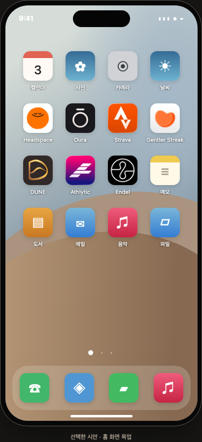
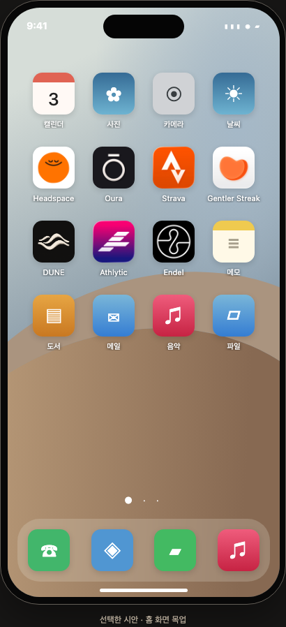
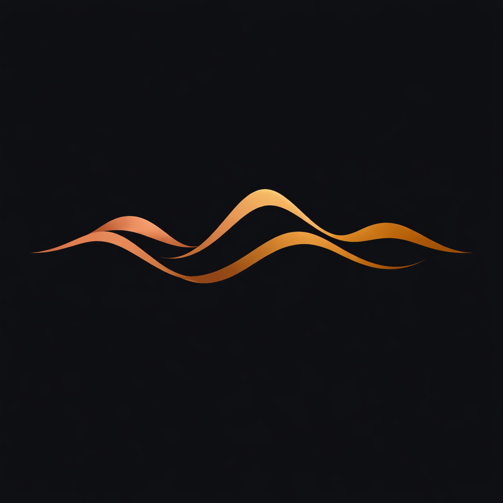

27 · 39 · 46 · 57 · 70 / DUNE은 세 번째 줄 첫 번째
기존 곡선 의미를 두꺼운 두 획으로 줄여 작은 크기에서도 안정적

가장 강한 단일 윤곽과 이름의 연결, 정사각형 안의 큰 비중
짙은 배경과 민트·빙하색의 대비, 둥근 두꺼운 곡선
따로 떠 있는 선보다 하나의 심볼로 읽히는 새로운 방향

적은 색으로도 곡선의 두께와 분리가 남는 차분한 대안

기존의 사구·생체 리듬을 유지하면서 선의 굵기, 실루엣, 테마 색과 연결을 비교해요.